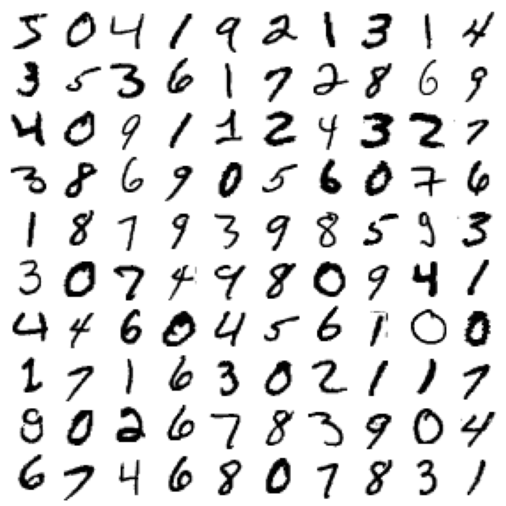
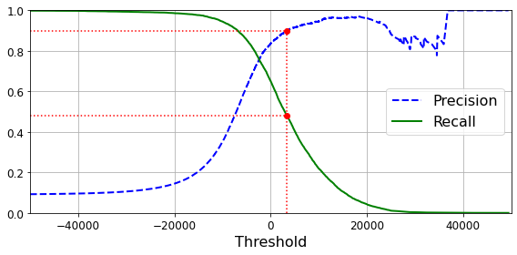
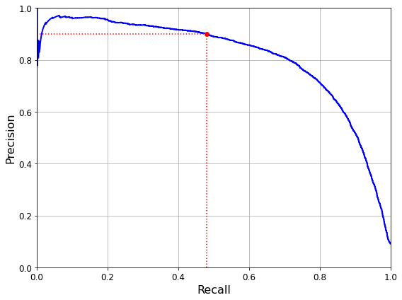
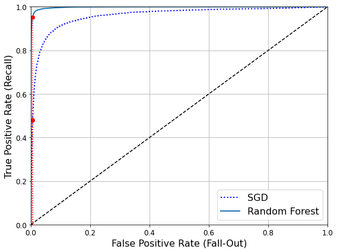
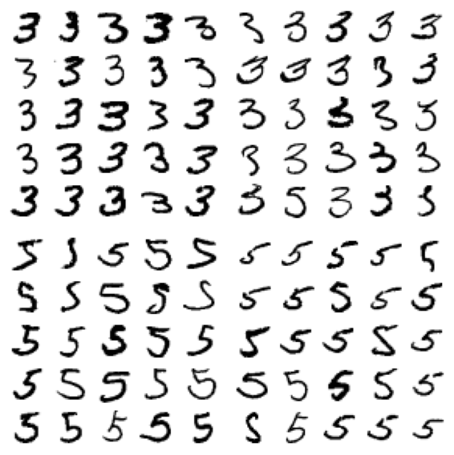
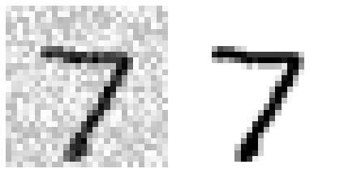
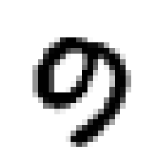
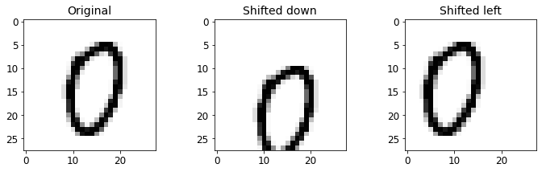
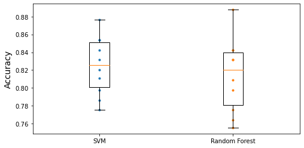

# Python ≥3.5 is required
import sys
assert sys.version_info >= (3, 5)
# Is this notebook running on Colab or Kaggle?
IS_COLAB = "google.colab" in sys.modules
IS_KAGGLE = "kaggle_secrets" in sys.modules
# Scikit-Learn ≥0.20 is required
import sklearn
assert sklearn.__version__ >= "0.20"
# Common imports
import numpy as np
import os
# to make this notebook's output stable across runs
np.random.seed(42)
# To plot pretty figures
%matplotlib inline
import matplotlib as mpl
import matplotlib.pyplot as plt
mpl.rc('axes', labelsize=14)
mpl.rc('xtick', labelsize=12)
mpl.rc('ytick', labelsize=12)
# Where to save the figures
PROJECT_ROOT_DIR = "."
CHAPTER_ID = "classification"
IMAGES_PATH = os.path.join(PROJECT_ROOT_DIR, "images", CHAPTER_ID)
os.makedirs(IMAGES_PATH, exist_ok=True)
def save_fig(fig_id, tight_layout=True, fig_extension="png", resolution=300):
path = os.path.join(IMAGES_PATH, fig_id + "." + fig_extension)
print("Saving figure", fig_id)
if tight_layout:
plt.tight_layout()
plt.savefig(path, format=fig_extension, dpi=resolution)Chapter 3 – Classification
This notebook contains all the sample code and solutions to the exercises in chapter 3.
Setup
First, let’s import a few common modules, ensure MatplotLib plots figures inline and prepare a function to save the figures. We also check that Python 3.5 or later is installed (although Python 2.x may work, it is deprecated so we strongly recommend you use Python 3 instead), as well as Scikit-Learn ≥0.20.
MNIST
Warning: since Scikit-Learn 0.24, fetch_openml() returns a Pandas DataFrame by default. To avoid this and keep the same code as in the book, we use as_frame=False.
from sklearn.datasets import fetch_openml
mnist = fetch_openml('mnist_784', version=1, as_frame=False)
mnist.keys()dict_keys(['data', 'target', 'frame', 'categories', 'feature_names', 'target_names', 'DESCR', 'details', 'url'])X, y = mnist["data"], mnist["target"]
X.shape(70000, 784)y.shape(70000,)28 * 28784%matplotlib inline
import matplotlib as mpl
import matplotlib.pyplot as plt
some_digit = X[0]
some_digit_image = some_digit.reshape(28, 28)
plt.imshow(some_digit_image, cmap=mpl.cm.binary)
plt.axis("off")
save_fig("some_digit_plot")
plt.show()Saving figure some_digit_plot
y[0]'5'y = y.astype(np.uint8)def plot_digit(data):
image = data.reshape(28, 28)
plt.imshow(image, cmap = mpl.cm.binary,
interpolation="nearest")
plt.axis("off")# EXTRA
def plot_digits(instances, images_per_row=10, **options):
size = 28
images_per_row = min(len(instances), images_per_row)
# This is equivalent to n_rows = ceil(len(instances) / images_per_row):
n_rows = (len(instances) - 1) // images_per_row + 1
# Append empty images to fill the end of the grid, if needed:
n_empty = n_rows * images_per_row - len(instances)
padded_instances = np.concatenate([instances, np.zeros((n_empty, size * size))], axis=0)
# Reshape the array so it's organized as a grid containing 28×28 images:
image_grid = padded_instances.reshape((n_rows, images_per_row, size, size))
# Combine axes 0 and 2 (vertical image grid axis, and vertical image axis),
# and axes 1 and 3 (horizontal axes). We first need to move the axes that we
# want to combine next to each other, using transpose(), and only then we
# can reshape:
big_image = image_grid.transpose(0, 2, 1, 3).reshape(n_rows * size,
images_per_row * size)
# Now that we have a big image, we just need to show it:
plt.imshow(big_image, cmap = mpl.cm.binary, **options)
plt.axis("off")plt.figure(figsize=(9,9))
example_images = X[:100]
plot_digits(example_images, images_per_row=10)
save_fig("more_digits_plot")
plt.show()Saving figure more_digits_plot
y[0]5X_train, X_test, y_train, y_test = X[:60000], X[60000:], y[:60000], y[60000:]Training a Binary Classifier
y_train_5 = (y_train == 5)
y_test_5 = (y_test == 5)Note: some hyperparameters will have a different defaut value in future versions of Scikit-Learn, such as max_iter and tol. To be future-proof, we explicitly set these hyperparameters to their future default values. For simplicity, this is not shown in the book.
from sklearn.linear_model import SGDClassifier
sgd_clf = SGDClassifier(max_iter=1000, tol=1e-3, random_state=42)
sgd_clf.fit(X_train, y_train_5)SGDClassifier(random_state=42)sgd_clf.predict([some_digit])array([ True])from sklearn.model_selection import cross_val_score
cross_val_score(sgd_clf, X_train, y_train_5, cv=3, scoring="accuracy")array([0.95035, 0.96035, 0.9604 ])Performance Measures
Measuring Accuracy Using Cross-Validation
from sklearn.model_selection import StratifiedKFold
from sklearn.base import clone
skfolds = StratifiedKFold(n_splits=3, shuffle=True, random_state=42)
for train_index, test_index in skfolds.split(X_train, y_train_5):
clone_clf = clone(sgd_clf)
X_train_folds = X_train[train_index]
y_train_folds = y_train_5[train_index]
X_test_fold = X_train[test_index]
y_test_fold = y_train_5[test_index]
clone_clf.fit(X_train_folds, y_train_folds)
y_pred = clone_clf.predict(X_test_fold)
n_correct = sum(y_pred == y_test_fold)
print(n_correct / len(y_pred))0.9669
0.91625
0.96785Note: shuffle=True was omitted by mistake in previous releases of the book.
from sklearn.base import BaseEstimator
class Never5Classifier(BaseEstimator):
def fit(self, X, y=None):
pass
def predict(self, X):
return np.zeros((len(X), 1), dtype=bool)never_5_clf = Never5Classifier()
cross_val_score(never_5_clf, X_train, y_train_5, cv=3, scoring="accuracy")array([0.91125, 0.90855, 0.90915])Warning: this output (and many others in this notebook and other notebooks) may differ slightly from those in the book. Don’t worry, that’s okay! There are several reasons for this: * first, Scikit-Learn and other libraries evolve, and algorithms get tweaked a bit, which may change the exact result you get. If you use the latest Scikit-Learn version (and in general, you really should), you probably won’t be using the exact same version I used when I wrote the book or this notebook, hence the difference. I try to keep this notebook reasonably up to date, but I can’t change the numbers on the pages in your copy of the book. * second, many training algorithms are stochastic, meaning they rely on randomness. In principle, it’s possible to get consistent outputs from a random number generator by setting the seed from which it generates the pseudo-random numbers (which is why you will see random_state=42 or np.random.seed(42) pretty often). However, sometimes this does not suffice due to the other factors listed here. * third, if the training algorithm runs across multiple threads (as do some algorithms implemented in C) or across multiple processes (e.g., when using the n_jobs argument), then the precise order in which operations will run is not always guaranteed, and thus the exact result may vary slightly. * lastly, other things may prevent perfect reproducibility, such as Python dicts and sets whose order is not guaranteed to be stable across sessions, or the order of files in a directory which is also not guaranteed.
Confusion Matrix
from sklearn.model_selection import cross_val_predict
y_train_pred = cross_val_predict(sgd_clf, X_train, y_train_5, cv=3)from sklearn.metrics import confusion_matrix
confusion_matrix(y_train_5, y_train_pred)array([[53892, 687],
[ 1891, 3530]])y_train_perfect_predictions = y_train_5 # pretend we reached perfection
confusion_matrix(y_train_5, y_train_perfect_predictions)array([[54579, 0],
[ 0, 5421]])Precision and Recall
from sklearn.metrics import precision_score, recall_score
precision_score(y_train_5, y_train_pred)0.8370879772350012cm = confusion_matrix(y_train_5, y_train_pred)
cm[1, 1] / (cm[0, 1] + cm[1, 1])0.8370879772350012recall_score(y_train_5, y_train_pred)0.6511713705958311cm[1, 1] / (cm[1, 0] + cm[1, 1])0.6511713705958311from sklearn.metrics import f1_score
f1_score(y_train_5, y_train_pred)0.7325171197343846cm[1, 1] / (cm[1, 1] + (cm[1, 0] + cm[0, 1]) / 2)0.7325171197343847Precision/Recall Trade-off
y_scores = sgd_clf.decision_function([some_digit])
y_scoresarray([2164.22030239])threshold = 0
y_some_digit_pred = (y_scores > threshold)y_some_digit_predarray([ True])threshold = 8000
y_some_digit_pred = (y_scores > threshold)
y_some_digit_predarray([False])y_scores = cross_val_predict(sgd_clf, X_train, y_train_5, cv=3,
method="decision_function")from sklearn.metrics import precision_recall_curve
precisions, recalls, thresholds = precision_recall_curve(y_train_5, y_scores)def plot_precision_recall_vs_threshold(precisions, recalls, thresholds):
plt.plot(thresholds, precisions[:-1], "b--", label="Precision", linewidth=2)
plt.plot(thresholds, recalls[:-1], "g-", label="Recall", linewidth=2)
plt.legend(loc="center right", fontsize=16) # Not shown in the book
plt.xlabel("Threshold", fontsize=16) # Not shown
plt.grid(True) # Not shown
plt.axis([-50000, 50000, 0, 1]) # Not shown
recall_90_precision = recalls[np.argmax(precisions >= 0.90)]
threshold_90_precision = thresholds[np.argmax(precisions >= 0.90)]
plt.figure(figsize=(8, 4)) # Not shown
plot_precision_recall_vs_threshold(precisions, recalls, thresholds)
plt.plot([threshold_90_precision, threshold_90_precision], [0., 0.9], "r:") # Not shown
plt.plot([-50000, threshold_90_precision], [0.9, 0.9], "r:") # Not shown
plt.plot([-50000, threshold_90_precision], [recall_90_precision, recall_90_precision], "r:")# Not shown
plt.plot([threshold_90_precision], [0.9], "ro") # Not shown
plt.plot([threshold_90_precision], [recall_90_precision], "ro") # Not shown
save_fig("precision_recall_vs_threshold_plot") # Not shown
plt.show()Saving figure precision_recall_vs_threshold_plot
(y_train_pred == (y_scores > 0)).all()Truedef plot_precision_vs_recall(precisions, recalls):
plt.plot(recalls, precisions, "b-", linewidth=2)
plt.xlabel("Recall", fontsize=16)
plt.ylabel("Precision", fontsize=16)
plt.axis([0, 1, 0, 1])
plt.grid(True)
plt.figure(figsize=(8, 6))
plot_precision_vs_recall(precisions, recalls)
plt.plot([recall_90_precision, recall_90_precision], [0., 0.9], "r:")
plt.plot([0.0, recall_90_precision], [0.9, 0.9], "r:")
plt.plot([recall_90_precision], [0.9], "ro")
save_fig("precision_vs_recall_plot")
plt.show()Saving figure precision_vs_recall_plot
threshold_90_precision = thresholds[np.argmax(precisions >= 0.90)]threshold_90_precision3370.0194991439557y_train_pred_90 = (y_scores >= threshold_90_precision)precision_score(y_train_5, y_train_pred_90)0.9000345901072293recall_score(y_train_5, y_train_pred_90)0.4799852425751706The ROC Curve
from sklearn.metrics import roc_curve
fpr, tpr, thresholds = roc_curve(y_train_5, y_scores)def plot_roc_curve(fpr, tpr, label=None):
plt.plot(fpr, tpr, linewidth=2, label=label)
plt.plot([0, 1], [0, 1], 'k--') # dashed diagonal
plt.axis([0, 1, 0, 1]) # Not shown in the book
plt.xlabel('False Positive Rate (Fall-Out)', fontsize=16) # Not shown
plt.ylabel('True Positive Rate (Recall)', fontsize=16) # Not shown
plt.grid(True) # Not shown
plt.figure(figsize=(8, 6)) # Not shown
plot_roc_curve(fpr, tpr)
fpr_90 = fpr[np.argmax(tpr >= recall_90_precision)] # Not shown
plt.plot([fpr_90, fpr_90], [0., recall_90_precision], "r:") # Not shown
plt.plot([0.0, fpr_90], [recall_90_precision, recall_90_precision], "r:") # Not shown
plt.plot([fpr_90], [recall_90_precision], "ro") # Not shown
save_fig("roc_curve_plot") # Not shown
plt.show()Saving figure roc_curve_plot
from sklearn.metrics import roc_auc_score
roc_auc_score(y_train_5, y_scores)0.9604938554008616Note: we set n_estimators=100 to be future-proof since this will be the default value in Scikit-Learn 0.22.
from sklearn.ensemble import RandomForestClassifier
forest_clf = RandomForestClassifier(n_estimators=100, random_state=42)
y_probas_forest = cross_val_predict(forest_clf, X_train, y_train_5, cv=3,
method="predict_proba")y_scores_forest = y_probas_forest[:, 1] # score = proba of positive class
fpr_forest, tpr_forest, thresholds_forest = roc_curve(y_train_5,y_scores_forest)recall_for_forest = tpr_forest[np.argmax(fpr_forest >= fpr_90)]
plt.figure(figsize=(8, 6))
plt.plot(fpr, tpr, "b:", linewidth=2, label="SGD")
plot_roc_curve(fpr_forest, tpr_forest, "Random Forest")
plt.plot([fpr_90, fpr_90], [0., recall_90_precision], "r:")
plt.plot([0.0, fpr_90], [recall_90_precision, recall_90_precision], "r:")
plt.plot([fpr_90], [recall_90_precision], "ro")
plt.plot([fpr_90, fpr_90], [0., recall_for_forest], "r:")
plt.plot([fpr_90], [recall_for_forest], "ro")
plt.grid(True)
plt.legend(loc="lower right", fontsize=16)
save_fig("roc_curve_comparison_plot")
plt.show()Saving figure roc_curve_comparison_plot
roc_auc_score(y_train_5, y_scores_forest)0.9983436731328145y_train_pred_forest = cross_val_predict(forest_clf, X_train, y_train_5, cv=3)
precision_score(y_train_5, y_train_pred_forest)0.9905083315756169recall_score(y_train_5, y_train_pred_forest)0.8662608374838591Multiclass Classification
from sklearn.svm import SVC
svm_clf = SVC(gamma="auto", random_state=42)
svm_clf.fit(X_train[:1000], y_train[:1000]) # y_train, not y_train_5
svm_clf.predict([some_digit])array([5], dtype=uint8)some_digit_scores = svm_clf.decision_function([some_digit])
some_digit_scoresarray([[ 2.81585438, 7.09167958, 3.82972099, 0.79365551, 5.8885703 ,
9.29718395, 1.79862509, 8.10392157, -0.228207 , 4.83753243]])np.argmax(some_digit_scores)5svm_clf.classes_array([0, 1, 2, 3, 4, 5, 6, 7, 8, 9], dtype=uint8)svm_clf.classes_[5]5from sklearn.multiclass import OneVsRestClassifier
ovr_clf = OneVsRestClassifier(SVC(gamma="auto", random_state=42))
ovr_clf.fit(X_train[:1000], y_train[:1000])
ovr_clf.predict([some_digit])array([5], dtype=uint8)len(ovr_clf.estimators_)10sgd_clf.fit(X_train, y_train)
sgd_clf.predict([some_digit])array([3], dtype=uint8)sgd_clf.decision_function([some_digit])array([[-31893.03095419, -34419.69069632, -9530.63950739,
1823.73154031, -22320.14822878, -1385.80478895,
-26188.91070951, -16147.51323997, -4604.35491274,
-12050.767298 ]])Warning: the following two cells may take close to 30 minutes to run, or more depending on your hardware.
cross_val_score(sgd_clf, X_train, y_train, cv=3, scoring="accuracy")array([0.87365, 0.85835, 0.8689 ])from sklearn.preprocessing import StandardScaler
scaler = StandardScaler()
X_train_scaled = scaler.fit_transform(X_train.astype(np.float64))
cross_val_score(sgd_clf, X_train_scaled, y_train, cv=3, scoring="accuracy")array([0.8983, 0.891 , 0.9018])Error Analysis
y_train_pred = cross_val_predict(sgd_clf, X_train_scaled, y_train, cv=3)
conf_mx = confusion_matrix(y_train, y_train_pred)
conf_mxarray([[5577, 0, 22, 5, 8, 43, 36, 6, 225, 1],
[ 0, 6400, 37, 24, 4, 44, 4, 7, 212, 10],
[ 27, 27, 5220, 92, 73, 27, 67, 36, 378, 11],
[ 22, 17, 117, 5227, 2, 203, 27, 40, 403, 73],
[ 12, 14, 41, 9, 5182, 12, 34, 27, 347, 164],
[ 27, 15, 30, 168, 53, 4444, 75, 14, 535, 60],
[ 30, 15, 42, 3, 44, 97, 5552, 3, 131, 1],
[ 21, 10, 51, 30, 49, 12, 3, 5684, 195, 210],
[ 17, 63, 48, 86, 3, 126, 25, 10, 5429, 44],
[ 25, 18, 30, 64, 118, 36, 1, 179, 371, 5107]])# since sklearn 0.22, you can use sklearn.metrics.plot_confusion_matrix()
def plot_confusion_matrix(matrix):
"""If you prefer color and a colorbar"""
fig = plt.figure(figsize=(8,8))
ax = fig.add_subplot(111)
cax = ax.matshow(matrix)
fig.colorbar(cax)plt.matshow(conf_mx, cmap=plt.cm.gray)
save_fig("confusion_matrix_plot", tight_layout=False)
plt.show()Saving figure confusion_matrix_plot
row_sums = conf_mx.sum(axis=1, keepdims=True)
norm_conf_mx = conf_mx / row_sumsnp.fill_diagonal(norm_conf_mx, 0)
plt.matshow(norm_conf_mx, cmap=plt.cm.gray)
save_fig("confusion_matrix_errors_plot", tight_layout=False)
plt.show()Saving figure confusion_matrix_errors_plot
cl_a, cl_b = 3, 5
X_aa = X_train[(y_train == cl_a) & (y_train_pred == cl_a)]
X_ab = X_train[(y_train == cl_a) & (y_train_pred == cl_b)]
X_ba = X_train[(y_train == cl_b) & (y_train_pred == cl_a)]
X_bb = X_train[(y_train == cl_b) & (y_train_pred == cl_b)]
plt.figure(figsize=(8,8))
plt.subplot(221); plot_digits(X_aa[:25], images_per_row=5)
plt.subplot(222); plot_digits(X_ab[:25], images_per_row=5)
plt.subplot(223); plot_digits(X_ba[:25], images_per_row=5)
plt.subplot(224); plot_digits(X_bb[:25], images_per_row=5)
save_fig("error_analysis_digits_plot")
plt.show()Saving figure error_analysis_digits_plot
Multilabel Classification
from sklearn.neighbors import KNeighborsClassifier
y_train_large = (y_train >= 7)
y_train_odd = (y_train % 2 == 1)
y_multilabel = np.c_[y_train_large, y_train_odd]
knn_clf = KNeighborsClassifier()
knn_clf.fit(X_train, y_multilabel)KNeighborsClassifier()knn_clf.predict([some_digit])array([[False, True]])Warning: the following cell may take a very long time (possibly hours depending on your hardware).
y_train_knn_pred = cross_val_predict(knn_clf, X_train, y_multilabel, cv=3)
f1_score(y_multilabel, y_train_knn_pred, average="macro")0.976410265560605Multioutput Classification
noise = np.random.randint(0, 100, (len(X_train), 784))
X_train_mod = X_train + noise
noise = np.random.randint(0, 100, (len(X_test), 784))
X_test_mod = X_test + noise
y_train_mod = X_train
y_test_mod = X_testsome_index = 0
plt.subplot(121); plot_digit(X_test_mod[some_index])
plt.subplot(122); plot_digit(y_test_mod[some_index])
save_fig("noisy_digit_example_plot")
plt.show()Saving figure noisy_digit_example_plot
knn_clf.fit(X_train_mod, y_train_mod)
clean_digit = knn_clf.predict([X_test_mod[some_index]])
plot_digit(clean_digit)
save_fig("cleaned_digit_example_plot")Saving figure cleaned_digit_example_plot
Extra material
Dummy (ie. random) classifier
from sklearn.dummy import DummyClassifier
dmy_clf = DummyClassifier(strategy="prior")
y_probas_dmy = cross_val_predict(dmy_clf, X_train, y_train_5, cv=3, method="predict_proba")
y_scores_dmy = y_probas_dmy[:, 1]fprr, tprr, thresholdsr = roc_curve(y_train_5, y_scores_dmy)
plot_roc_curve(fprr, tprr)
KNN classifier
from sklearn.neighbors import KNeighborsClassifier
knn_clf = KNeighborsClassifier(weights='distance', n_neighbors=4)
knn_clf.fit(X_train, y_train)KNeighborsClassifier(n_neighbors=4, weights='distance')y_knn_pred = knn_clf.predict(X_test)from sklearn.metrics import accuracy_score
accuracy_score(y_test, y_knn_pred)0.9714from scipy.ndimage.interpolation import shift
def shift_digit(digit_array, dx, dy, new=0):
return shift(digit_array.reshape(28, 28), [dy, dx], cval=new).reshape(784)
plot_digit(shift_digit(some_digit, 5, 1, new=100))
X_train_expanded = [X_train]
y_train_expanded = [y_train]
for dx, dy in ((1, 0), (-1, 0), (0, 1), (0, -1)):
shifted_images = np.apply_along_axis(shift_digit, axis=1, arr=X_train, dx=dx, dy=dy)
X_train_expanded.append(shifted_images)
y_train_expanded.append(y_train)
X_train_expanded = np.concatenate(X_train_expanded)
y_train_expanded = np.concatenate(y_train_expanded)
X_train_expanded.shape, y_train_expanded.shape((300000, 784), (300000,))knn_clf.fit(X_train_expanded, y_train_expanded)KNeighborsClassifier(n_neighbors=4, weights='distance')y_knn_expanded_pred = knn_clf.predict(X_test)accuracy_score(y_test, y_knn_expanded_pred)0.9763ambiguous_digit = X_test[2589]
knn_clf.predict_proba([ambiguous_digit])array([[0.24579675, 0. , 0. , 0. , 0. ,
0. , 0. , 0. , 0. , 0.75420325]])plot_digit(ambiguous_digit)
Exercise solutions
1. An MNIST Classifier With Over 97% Accuracy
Warning: the next cell may take close to 16 hours to run, or more depending on your hardware.
from sklearn.model_selection import GridSearchCV
param_grid = [{'weights': ["uniform", "distance"], 'n_neighbors': [3, 4, 5]}]
knn_clf = KNeighborsClassifier()
grid_search = GridSearchCV(knn_clf, param_grid, cv=5, verbose=3)
grid_search.fit(X_train, y_train)Fitting 5 folds for each of 6 candidates, totalling 30 fits
[CV] n_neighbors=3, weights=uniform ..................................
[CV] ..... n_neighbors=3, weights=uniform, score=0.972, total=168.0min
[CV] n_neighbors=3, weights=uniform ..................................
[CV] ...... n_neighbors=3, weights=uniform, score=0.971, total=12.3min
[CV] n_neighbors=3, weights=uniform ..................................
[CV] ...... n_neighbors=3, weights=uniform, score=0.969, total=11.9min
[CV] n_neighbors=3, weights=uniform ..................................
[CV] ...... n_neighbors=3, weights=uniform, score=0.969, total=12.5min
[CV] n_neighbors=3, weights=uniform ..................................
[CV] ...... n_neighbors=3, weights=uniform, score=0.970, total=12.7min
[CV] n_neighbors=3, weights=distance .................................
[CV] ..... n_neighbors=3, weights=distance, score=0.972, total=12.5min
[CV] n_neighbors=3, weights=distance .................................
[CV] ..... n_neighbors=3, weights=distance, score=0.972, total=12.8min
[CV] n_neighbors=3, weights=distance .................................
[CV] ..... n_neighbors=3, weights=distance, score=0.970, total=12.6min
[CV] n_neighbors=3, weights=distance .................................
[CV] ..... n_neighbors=3, weights=distance, score=0.970, total=12.9min
[CV] n_neighbors=3, weights=distance .................................
[CV] ..... n_neighbors=3, weights=distance, score=0.971, total=11.3min
[CV] n_neighbors=4, weights=uniform ..................................
[CV] ...... n_neighbors=4, weights=uniform, score=0.969, total=11.0min
[CV] n_neighbors=4, weights=uniform ..................................
[CV] ...... n_neighbors=4, weights=uniform, score=0.968, total=11.0min
[CV] n_neighbors=4, weights=uniform ..................................
[CV] ...... n_neighbors=4, weights=uniform, score=0.968, total=11.0min
[CV] n_neighbors=4, weights=uniform ..................................
[CV] ...... n_neighbors=4, weights=uniform, score=0.967, total=11.0min
[CV] n_neighbors=4, weights=uniform ..................................
[CV] ...... n_neighbors=4, weights=uniform, score=0.970, total=11.0min
[CV] n_neighbors=4, weights=distance .................................
[CV] ..... n_neighbors=4, weights=distance, score=0.973, total=11.0min
[CV] n_neighbors=4, weights=distance .................................
[CV] ..... n_neighbors=4, weights=distance, score=0.972, total=11.0min
[CV] n_neighbors=4, weights=distance .................................
[CV] ..... n_neighbors=4, weights=distance, score=0.970, total=11.0min
[CV] n_neighbors=4, weights=distance .................................
[CV] ..... n_neighbors=4, weights=distance, score=0.971, total=11.0min
[CV] n_neighbors=4, weights=distance .................................
[CV] ..... n_neighbors=4, weights=distance, score=0.972, total=11.3min
[CV] n_neighbors=5, weights=uniform ..................................
[CV] ...... n_neighbors=5, weights=uniform, score=0.970, total=10.9min
[CV] n_neighbors=5, weights=uniform ..................................
[CV] ...... n_neighbors=5, weights=uniform, score=0.970, total=11.0min
[CV] n_neighbors=5, weights=uniform ..................................
[CV] ...... n_neighbors=5, weights=uniform, score=0.969, total=11.0min
[CV] n_neighbors=5, weights=uniform ..................................
[CV] ...... n_neighbors=5, weights=uniform, score=0.968, total=11.1min
[CV] n_neighbors=5, weights=uniform ..................................
[CV] ...... n_neighbors=5, weights=uniform, score=0.969, total=11.0min
[CV] n_neighbors=5, weights=distance .................................
[CV] ..... n_neighbors=5, weights=distance, score=0.970, total=93.6min
[CV] n_neighbors=5, weights=distance .................................
[CV] ..... n_neighbors=5, weights=distance, score=0.971, total=11.0min
[CV] n_neighbors=5, weights=distance .................................
[CV] ..... n_neighbors=5, weights=distance, score=0.970, total=10.9min
[CV] n_neighbors=5, weights=distance .................................
[CV] ..... n_neighbors=5, weights=distance, score=0.969, total=11.2min
[CV] n_neighbors=5, weights=distance .................................
[CV] ..... n_neighbors=5, weights=distance, score=0.971, total=11.1minGridSearchCV(cv=5, estimator=KNeighborsClassifier(),
param_grid=[{'n_neighbors': [3, 4, 5],
'weights': ['uniform', 'distance']}],
verbose=3)grid_search.best_params_{'n_neighbors': 4, 'weights': 'distance'}grid_search.best_score_0.9716166666666666from sklearn.metrics import accuracy_score
y_pred = grid_search.predict(X_test)
accuracy_score(y_test, y_pred)0.97142. Data Augmentation
from scipy.ndimage.interpolation import shiftdef shift_image(image, dx, dy):
image = image.reshape((28, 28))
shifted_image = shift(image, [dy, dx], cval=0, mode="constant")
return shifted_image.reshape([-1])image = X_train[1000]
shifted_image_down = shift_image(image, 0, 5)
shifted_image_left = shift_image(image, -5, 0)
plt.figure(figsize=(12,3))
plt.subplot(131)
plt.title("Original", fontsize=14)
plt.imshow(image.reshape(28, 28), interpolation="nearest", cmap="Greys")
plt.subplot(132)
plt.title("Shifted down", fontsize=14)
plt.imshow(shifted_image_down.reshape(28, 28), interpolation="nearest", cmap="Greys")
plt.subplot(133)
plt.title("Shifted left", fontsize=14)
plt.imshow(shifted_image_left.reshape(28, 28), interpolation="nearest", cmap="Greys")
plt.show()
X_train_augmented = [image for image in X_train]
y_train_augmented = [label for label in y_train]
for dx, dy in ((1, 0), (-1, 0), (0, 1), (0, -1)):
for image, label in zip(X_train, y_train):
X_train_augmented.append(shift_image(image, dx, dy))
y_train_augmented.append(label)
X_train_augmented = np.array(X_train_augmented)
y_train_augmented = np.array(y_train_augmented)shuffle_idx = np.random.permutation(len(X_train_augmented))
X_train_augmented = X_train_augmented[shuffle_idx]
y_train_augmented = y_train_augmented[shuffle_idx]knn_clf = KNeighborsClassifier(**grid_search.best_params_)knn_clf.fit(X_train_augmented, y_train_augmented)KNeighborsClassifier(n_neighbors=4, weights='distance')Warning: the following cell may take close to an hour to run, depending on your hardware.
y_pred = knn_clf.predict(X_test)
accuracy_score(y_test, y_pred)0.9763By simply augmenting the data, we got a 0.5% accuracy boost. :)
3. Tackle the Titanic dataset
The goal is to predict whether or not a passenger survived based on attributes such as their age, sex, passenger class, where they embarked and so on.
Let’s fetch the data and load it:
import os
import urllib.request
TITANIC_PATH = os.path.join("datasets", "titanic")
DOWNLOAD_URL = "https://raw.githubusercontent.com/ageron/handson-ml2/master/datasets/titanic/"
def fetch_titanic_data(url=DOWNLOAD_URL, path=TITANIC_PATH):
if not os.path.isdir(path):
os.makedirs(path)
for filename in ("train.csv", "test.csv"):
filepath = os.path.join(path, filename)
if not os.path.isfile(filepath):
print("Downloading", filename)
urllib.request.urlretrieve(url + filename, filepath)
fetch_titanic_data() import pandas as pd
def load_titanic_data(filename, titanic_path=TITANIC_PATH):
csv_path = os.path.join(titanic_path, filename)
return pd.read_csv(csv_path)train_data = load_titanic_data("train.csv")
test_data = load_titanic_data("test.csv")The data is already split into a training set and a test set. However, the test data does not contain the labels: your goal is to train the best model you can using the training data, then make your predictions on the test data and upload them to Kaggle to see your final score.
Let’s take a peek at the top few rows of the training set:
train_data.head()| PassengerId | Survived | Pclass | Name | Sex | Age | SibSp | Parch | Ticket | Fare | Cabin | Embarked | |
|---|---|---|---|---|---|---|---|---|---|---|---|---|
| 0 | 1 | 0 | 3 | Braund, Mr. Owen Harris | male | 22.0 | 1 | 0 | A/5 21171 | 7.2500 | NaN | S |
| 1 | 2 | 1 | 1 | Cumings, Mrs. John Bradley (Florence Briggs Th... | female | 38.0 | 1 | 0 | PC 17599 | 71.2833 | C85 | C |
| 2 | 3 | 1 | 3 | Heikkinen, Miss. Laina | female | 26.0 | 0 | 0 | STON/O2. 3101282 | 7.9250 | NaN | S |
| 3 | 4 | 1 | 1 | Futrelle, Mrs. Jacques Heath (Lily May Peel) | female | 35.0 | 1 | 0 | 113803 | 53.1000 | C123 | S |
| 4 | 5 | 0 | 3 | Allen, Mr. William Henry | male | 35.0 | 0 | 0 | 373450 | 8.0500 | NaN | S |
The attributes have the following meaning: * PassengerId: a unique identifier for each passenger * Survived: that’s the target, 0 means the passenger did not survive, while 1 means he/she survived. * Pclass: passenger class. * Name, Sex, Age: self-explanatory * SibSp: how many siblings & spouses of the passenger aboard the Titanic. * Parch: how many children & parents of the passenger aboard the Titanic. * Ticket: ticket id * Fare: price paid (in pounds) * Cabin: passenger’s cabin number * Embarked: where the passenger embarked the Titanic
Let’s explicitly set the PassengerId column as the index column:
train_data = train_data.set_index("PassengerId")
test_data = test_data.set_index("PassengerId")Let’s get more info to see how much data is missing:
train_data.info()<class 'pandas.core.frame.DataFrame'>
Int64Index: 891 entries, 1 to 891
Data columns (total 11 columns):
# Column Non-Null Count Dtype
--- ------ -------------- -----
0 Survived 891 non-null int64
1 Pclass 891 non-null int64
2 Name 891 non-null object
3 Sex 891 non-null object
4 Age 714 non-null float64
5 SibSp 891 non-null int64
6 Parch 891 non-null int64
7 Ticket 891 non-null object
8 Fare 891 non-null float64
9 Cabin 204 non-null object
10 Embarked 889 non-null object
dtypes: float64(2), int64(4), object(5)
memory usage: 83.5+ KBtrain_data[train_data["Sex"]=="female"]["Age"].median()27.0Okay, the Age, Cabin and Embarked attributes are sometimes null (less than 891 non-null), especially the Cabin (77% are null). We will ignore the Cabin for now and focus on the rest. The Age attribute has about 19% null values, so we will need to decide what to do with them. Replacing null values with the median age seems reasonable. We could be a bit smarter by predicting the age based on the other columns (for example, the median age is 37 in 1st class, 29 in 2nd class and 24 in 3rd class), but we’ll keep things simple and just use the overall median age.
The Name and Ticket attributes may have some value, but they will be a bit tricky to convert into useful numbers that a model can consume. So for now, we will ignore them.
Let’s take a look at the numerical attributes:
train_data.describe()| Survived | Pclass | Age | SibSp | Parch | Fare | |
|---|---|---|---|---|---|---|
| count | 891.000000 | 891.000000 | 714.000000 | 891.000000 | 891.000000 | 891.000000 |
| mean | 0.383838 | 2.308642 | 29.699113 | 0.523008 | 0.381594 | 32.204208 |
| std | 0.486592 | 0.836071 | 14.526507 | 1.102743 | 0.806057 | 49.693429 |
| min | 0.000000 | 1.000000 | 0.416700 | 0.000000 | 0.000000 | 0.000000 |
| 25% | 0.000000 | 2.000000 | 20.125000 | 0.000000 | 0.000000 | 7.910400 |
| 50% | 0.000000 | 3.000000 | 28.000000 | 0.000000 | 0.000000 | 14.454200 |
| 75% | 1.000000 | 3.000000 | 38.000000 | 1.000000 | 0.000000 | 31.000000 |
| max | 1.000000 | 3.000000 | 80.000000 | 8.000000 | 6.000000 | 512.329200 |
- Yikes, only 38% Survived! 😭 That’s close enough to 40%, so accuracy will be a reasonable metric to evaluate our model.
- The mean Fare was £32.20, which does not seem so expensive (but it was probably a lot of money back then).
- The mean Age was less than 30 years old.
Let’s check that the target is indeed 0 or 1:
train_data["Survived"].value_counts()0 549
1 342
Name: Survived, dtype: int64Now let’s take a quick look at all the categorical attributes:
train_data["Pclass"].value_counts()3 491
1 216
2 184
Name: Pclass, dtype: int64train_data["Sex"].value_counts()male 577
female 314
Name: Sex, dtype: int64train_data["Embarked"].value_counts()S 644
C 168
Q 77
Name: Embarked, dtype: int64The Embarked attribute tells us where the passenger embarked: C=Cherbourg, Q=Queenstown, S=Southampton.
Now let’s build our preprocessing pipelines, starting with the pipeline for numerical attributes:
from sklearn.pipeline import Pipeline
from sklearn.impute import SimpleImputer
from sklearn.preprocessing import StandardScaler
num_pipeline = Pipeline([
("imputer", SimpleImputer(strategy="median")),
("scaler", StandardScaler())
])Now we can build the pipeline for the categorical attributes:
from sklearn.preprocessing import OneHotEncodercat_pipeline = Pipeline([
("imputer", SimpleImputer(strategy="most_frequent")),
("cat_encoder", OneHotEncoder(sparse=False)),
])Finally, let’s join the numerical and categorical pipelines:
from sklearn.compose import ColumnTransformer
num_attribs = ["Age", "SibSp", "Parch", "Fare"]
cat_attribs = ["Pclass", "Sex", "Embarked"]
preprocess_pipeline = ColumnTransformer([
("num", num_pipeline, num_attribs),
("cat", cat_pipeline, cat_attribs),
])Cool! Now we have a nice preprocessing pipeline that takes the raw data and outputs numerical input features that we can feed to any Machine Learning model we want.
X_train = preprocess_pipeline.fit_transform(
train_data[num_attribs + cat_attribs])
X_trainarray([[-0.56573582, 0.43279337, -0.47367361, ..., 0. ,
0. , 1. ],
[ 0.6638609 , 0.43279337, -0.47367361, ..., 1. ,
0. , 0. ],
[-0.25833664, -0.4745452 , -0.47367361, ..., 0. ,
0. , 1. ],
...,
[-0.10463705, 0.43279337, 2.00893337, ..., 0. ,
0. , 1. ],
[-0.25833664, -0.4745452 , -0.47367361, ..., 1. ,
0. , 0. ],
[ 0.20276213, -0.4745452 , -0.47367361, ..., 0. ,
1. , 0. ]])Let’s not forget to get the labels:
y_train = train_data["Survived"]We are now ready to train a classifier. Let’s start with a RandomForestClassifier:
from sklearn.ensemble import RandomForestClassifier
forest_clf = RandomForestClassifier(n_estimators=100, random_state=42)
forest_clf.fit(X_train, y_train)RandomForestClassifier(random_state=42)Great, our model is trained, let’s use it to make predictions on the test set:
X_test = preprocess_pipeline.transform(test_data[num_attribs + cat_attribs])
y_pred = forest_clf.predict(X_test)And now we could just build a CSV file with these predictions (respecting the format excepted by Kaggle), then upload it and hope for the best. But wait! We can do better than hope. Why don’t we use cross-validation to have an idea of how good our model is?
from sklearn.model_selection import cross_val_score
forest_scores = cross_val_score(forest_clf, X_train, y_train, cv=10)
forest_scores.mean()0.8137578027465668Okay, not too bad! Looking at the leaderboard for the Titanic competition on Kaggle, you can see that our score is in the top 2%, woohoo! Some Kagglers reached 100% accuracy, but since you can easily find the list of victims of the Titanic, it seems likely that there was little Machine Learning involved in their performance! 😆
Let’s try an SVC:
from sklearn.svm import SVC
svm_clf = SVC(gamma="auto")
svm_scores = cross_val_score(svm_clf, X_train, y_train, cv=10)
svm_scores.mean()0.8249313358302123Great! This model looks better.
But instead of just looking at the mean accuracy across the 10 cross-validation folds, let’s plot all 10 scores for each model, along with a box plot highlighting the lower and upper quartiles, and “whiskers” showing the extent of the scores (thanks to Nevin Yilmaz for suggesting this visualization). Note that the boxplot() function detects outliers (called “fliers”) and does not include them within the whiskers. Specifically, if the lower quartile is \(Q_1\) and the upper quartile is \(Q_3\), then the interquartile range \(IQR = Q_3 - Q_1\) (this is the box’s height), and any score lower than \(Q_1 - 1.5 \times IQR\) is a flier, and so is any score greater than \(Q3 + 1.5 \times IQR\).
import matplotlib.pyplot as plt
plt.figure(figsize=(8, 4))
plt.plot([1]*10, svm_scores, ".")
plt.plot([2]*10, forest_scores, ".")
plt.boxplot([svm_scores, forest_scores], labels=("SVM","Random Forest"))
plt.ylabel("Accuracy", fontsize=14)
plt.show()
The random forest classifier got a very high score on one of the 10 folds, but overall it had a lower mean score, as well as a bigger spread, so it looks like the SVM classifier is more likely to generalize well.
To improve this result further, you could: * Compare many more models and tune hyperparameters using cross validation and grid search, * Do more feature engineering, for example: * Try to convert numerical attributes to categorical attributes: for example, different age groups had very different survival rates (see below), so it may help to create an age bucket category and use it instead of the age. Similarly, it may be useful to have a special category for people traveling alone since only 30% of them survived (see below). * Replace SibSp and Parch with their sum. * Try to identify parts of names that correlate well with the Survived attribute. * Use the Cabin column, for example take its first letter and treat it as a categorical attribute.
train_data["AgeBucket"] = train_data["Age"] // 15 * 15
train_data[["AgeBucket", "Survived"]].groupby(['AgeBucket']).mean()| Survived | |
|---|---|
| AgeBucket | |
| 0.0 | 0.576923 |
| 15.0 | 0.362745 |
| 30.0 | 0.423256 |
| 45.0 | 0.404494 |
| 60.0 | 0.240000 |
| 75.0 | 1.000000 |
train_data["RelativesOnboard"] = train_data["SibSp"] + train_data["Parch"]
train_data[["RelativesOnboard", "Survived"]].groupby(['RelativesOnboard']).mean()| Survived | |
|---|---|
| RelativesOnboard | |
| 0 | 0.303538 |
| 1 | 0.552795 |
| 2 | 0.578431 |
| 3 | 0.724138 |
| 4 | 0.200000 |
| 5 | 0.136364 |
| 6 | 0.333333 |
| 7 | 0.000000 |
| 10 | 0.000000 |
4. Spam classifier
First, let’s fetch the data:
import os
import tarfile
import urllib.request
DOWNLOAD_ROOT = "http://spamassassin.apache.org/old/publiccorpus/"
HAM_URL = DOWNLOAD_ROOT + "20030228_easy_ham.tar.bz2"
SPAM_URL = DOWNLOAD_ROOT + "20030228_spam.tar.bz2"
SPAM_PATH = os.path.join("datasets", "spam")
def fetch_spam_data(ham_url=HAM_URL, spam_url=SPAM_URL, spam_path=SPAM_PATH):
if not os.path.isdir(spam_path):
os.makedirs(spam_path)
for filename, url in (("ham.tar.bz2", ham_url), ("spam.tar.bz2", spam_url)):
path = os.path.join(spam_path, filename)
if not os.path.isfile(path):
urllib.request.urlretrieve(url, path)
tar_bz2_file = tarfile.open(path)
tar_bz2_file.extractall(path=spam_path)
tar_bz2_file.close()fetch_spam_data()Next, let’s load all the emails:
HAM_DIR = os.path.join(SPAM_PATH, "easy_ham")
SPAM_DIR = os.path.join(SPAM_PATH, "spam")
ham_filenames = [name for name in sorted(os.listdir(HAM_DIR)) if len(name) > 20]
spam_filenames = [name for name in sorted(os.listdir(SPAM_DIR)) if len(name) > 20]len(ham_filenames)2500len(spam_filenames)500We can use Python’s email module to parse these emails (this handles headers, encoding, and so on):
import email
import email.policy
def load_email(is_spam, filename, spam_path=SPAM_PATH):
directory = "spam" if is_spam else "easy_ham"
with open(os.path.join(spam_path, directory, filename), "rb") as f:
return email.parser.BytesParser(policy=email.policy.default).parse(f)ham_emails = [load_email(is_spam=False, filename=name) for name in ham_filenames]
spam_emails = [load_email(is_spam=True, filename=name) for name in spam_filenames]Let’s look at one example of ham and one example of spam, to get a feel of what the data looks like:
print(ham_emails[1].get_content().strip())Martin A posted:
Tassos Papadopoulos, the Greek sculptor behind the plan, judged that the
limestone of Mount Kerdylio, 70 miles east of Salonika and not far from the
Mount Athos monastic community, was ideal for the patriotic sculpture.
As well as Alexander's granite features, 240 ft high and 170 ft wide, a
museum, a restored amphitheatre and car park for admiring crowds are
planned
---------------------
So is this mountain limestone or granite?
If it's limestone, it'll weather pretty fast.
------------------------ Yahoo! Groups Sponsor ---------------------~-->
4 DVDs Free +s&p Join Now
http://us.click.yahoo.com/pt6YBB/NXiEAA/mG3HAA/7gSolB/TM
---------------------------------------------------------------------~->
To unsubscribe from this group, send an email to:
forteana-unsubscribe@egroups.com
Your use of Yahoo! Groups is subject to http://docs.yahoo.com/info/terms/print(spam_emails[6].get_content().strip())Help wanted. We are a 14 year old fortune 500 company, that is
growing at a tremendous rate. We are looking for individuals who
want to work from home.
This is an opportunity to make an excellent income. No experience
is required. We will train you.
So if you are looking to be employed from home with a career that has
vast opportunities, then go:
http://www.basetel.com/wealthnow
We are looking for energetic and self motivated people. If that is you
than click on the link and fill out the form, and one of our
employement specialist will contact you.
To be removed from our link simple go to:
http://www.basetel.com/remove.html
4139vOLW7-758DoDY1425FRhM1-764SMFc8513fCsLl40Some emails are actually multipart, with images and attachments (which can have their own attachments). Let’s look at the various types of structures we have:
def get_email_structure(email):
if isinstance(email, str):
return email
payload = email.get_payload()
if isinstance(payload, list):
return "multipart({})".format(", ".join([
get_email_structure(sub_email)
for sub_email in payload
]))
else:
return email.get_content_type()from collections import Counter
def structures_counter(emails):
structures = Counter()
for email in emails:
structure = get_email_structure(email)
structures[structure] += 1
return structuresstructures_counter(ham_emails).most_common()[('text/plain', 2408),
('multipart(text/plain, application/pgp-signature)', 66),
('multipart(text/plain, text/html)', 8),
('multipart(text/plain, text/plain)', 4),
('multipart(text/plain)', 3),
('multipart(text/plain, application/octet-stream)', 2),
('multipart(text/plain, text/enriched)', 1),
('multipart(text/plain, application/ms-tnef, text/plain)', 1),
('multipart(multipart(text/plain, text/plain, text/plain), application/pgp-signature)',
1),
('multipart(text/plain, video/mng)', 1),
('multipart(text/plain, multipart(text/plain))', 1),
('multipart(text/plain, application/x-pkcs7-signature)', 1),
('multipart(text/plain, multipart(text/plain, text/plain), text/rfc822-headers)',
1),
('multipart(text/plain, multipart(text/plain, text/plain), multipart(multipart(text/plain, application/x-pkcs7-signature)))',
1),
('multipart(text/plain, application/x-java-applet)', 1)]structures_counter(spam_emails).most_common()[('text/plain', 218),
('text/html', 183),
('multipart(text/plain, text/html)', 45),
('multipart(text/html)', 20),
('multipart(text/plain)', 19),
('multipart(multipart(text/html))', 5),
('multipart(text/plain, image/jpeg)', 3),
('multipart(text/html, application/octet-stream)', 2),
('multipart(text/plain, application/octet-stream)', 1),
('multipart(text/html, text/plain)', 1),
('multipart(multipart(text/html), application/octet-stream, image/jpeg)', 1),
('multipart(multipart(text/plain, text/html), image/gif)', 1),
('multipart/alternative', 1)]It seems that the ham emails are more often plain text, while spam has quite a lot of HTML. Moreover, quite a few ham emails are signed using PGP, while no spam is. In short, it seems that the email structure is useful information to have.
Now let’s take a look at the email headers:
for header, value in spam_emails[0].items():
print(header,":",value)Return-Path : <12a1mailbot1@web.de>
Delivered-To : zzzz@localhost.spamassassin.taint.org
Received : from localhost (localhost [127.0.0.1]) by phobos.labs.spamassassin.taint.org (Postfix) with ESMTP id 136B943C32 for <zzzz@localhost>; Thu, 22 Aug 2002 08:17:21 -0400 (EDT)
Received : from mail.webnote.net [193.120.211.219] by localhost with POP3 (fetchmail-5.9.0) for zzzz@localhost (single-drop); Thu, 22 Aug 2002 13:17:21 +0100 (IST)
Received : from dd_it7 ([210.97.77.167]) by webnote.net (8.9.3/8.9.3) with ESMTP id NAA04623 for <zzzz@spamassassin.taint.org>; Thu, 22 Aug 2002 13:09:41 +0100
From : 12a1mailbot1@web.de
Received : from r-smtp.korea.com - 203.122.2.197 by dd_it7 with Microsoft SMTPSVC(5.5.1775.675.6); Sat, 24 Aug 2002 09:42:10 +0900
To : dcek1a1@netsgo.com
Subject : Life Insurance - Why Pay More?
Date : Wed, 21 Aug 2002 20:31:57 -1600
MIME-Version : 1.0
Message-ID : <0103c1042001882DD_IT7@dd_it7>
Content-Type : text/html; charset="iso-8859-1"
Content-Transfer-Encoding : quoted-printableThere’s probably a lot of useful information in there, such as the sender’s email address (12a1mailbot1@web.de looks fishy), but we will just focus on the Subject header:
spam_emails[0]["Subject"]'Life Insurance - Why Pay More?'Okay, before we learn too much about the data, let’s not forget to split it into a training set and a test set:
import numpy as np
from sklearn.model_selection import train_test_split
X = np.array(ham_emails + spam_emails, dtype=object)
y = np.array([0] * len(ham_emails) + [1] * len(spam_emails))
X_train, X_test, y_train, y_test = train_test_split(X, y, test_size=0.2, random_state=42)Okay, let’s start writing the preprocessing functions. First, we will need a function to convert HTML to plain text. Arguably the best way to do this would be to use the great BeautifulSoup library, but I would like to avoid adding another dependency to this project, so let’s hack a quick & dirty solution using regular expressions (at the risk of un̨ho͞ly radiańcé destro҉ying all enli̍̈́̂̈́ghtenment). The following function first drops the <head> section, then converts all <a> tags to the word HYPERLINK, then it gets rid of all HTML tags, leaving only the plain text. For readability, it also replaces multiple newlines with single newlines, and finally it unescapes html entities (such as > or ):
import re
from html import unescape
def html_to_plain_text(html):
text = re.sub('<head.*?>.*?</head>', '', html, flags=re.M | re.S | re.I)
text = re.sub('<a\s.*?>', ' HYPERLINK ', text, flags=re.M | re.S | re.I)
text = re.sub('<.*?>', '', text, flags=re.M | re.S)
text = re.sub(r'(\s*\n)+', '\n', text, flags=re.M | re.S)
return unescape(text)Let’s see if it works. This is HTML spam:
html_spam_emails = [email for email in X_train[y_train==1]
if get_email_structure(email) == "text/html"]
sample_html_spam = html_spam_emails[7]
print(sample_html_spam.get_content().strip()[:1000], "...")<HTML><HEAD><TITLE></TITLE><META http-equiv="Content-Type" content="text/html; charset=windows-1252"><STYLE>A:link {TEX-DECORATION: none}A:active {TEXT-DECORATION: none}A:visited {TEXT-DECORATION: none}A:hover {COLOR: #0033ff; TEXT-DECORATION: underline}</STYLE><META content="MSHTML 6.00.2713.1100" name="GENERATOR"></HEAD>
<BODY text="#000000" vLink="#0033ff" link="#0033ff" bgColor="#CCCC99"><TABLE borderColor="#660000" cellSpacing="0" cellPadding="0" border="0" width="100%"><TR><TD bgColor="#CCCC99" valign="top" colspan="2" height="27">
<font size="6" face="Arial, Helvetica, sans-serif" color="#660000">
<b>OTC</b></font></TD></TR><TR><TD height="2" bgcolor="#6a694f">
<font size="5" face="Times New Roman, Times, serif" color="#FFFFFF">
<b> Newsletter</b></font></TD><TD height="2" bgcolor="#6a694f"><div align="right"><font color="#FFFFFF">
<b>Discover Tomorrow's Winners </b></font></div></TD></TR><TR><TD height="25" colspan="2" bgcolor="#CCCC99"><table width="100%" border="0" ...And this is the resulting plain text:
print(html_to_plain_text(sample_html_spam.get_content())[:1000], "...")
OTC
Newsletter
Discover Tomorrow's Winners
For Immediate Release
Cal-Bay (Stock Symbol: CBYI)
Watch for analyst "Strong Buy Recommendations" and several advisory newsletters picking CBYI. CBYI has filed to be traded on the OTCBB, share prices historically INCREASE when companies get listed on this larger trading exchange. CBYI is trading around 25 cents and should skyrocket to $2.66 - $3.25 a share in the near future.
Put CBYI on your watch list, acquire a position TODAY.
REASONS TO INVEST IN CBYI
A profitable company and is on track to beat ALL earnings estimates!
One of the FASTEST growing distributors in environmental & safety equipment instruments.
Excellent management team, several EXCLUSIVE contracts. IMPRESSIVE client list including the U.S. Air Force, Anheuser-Busch, Chevron Refining and Mitsubishi Heavy Industries, GE-Energy & Environmental Research.
RAPIDLY GROWING INDUSTRY
Industry revenues exceed $900 million, estimates indicate that there could be as much as $25 billi ...Great! Now let’s write a function that takes an email as input and returns its content as plain text, whatever its format is:
def email_to_text(email):
html = None
for part in email.walk():
ctype = part.get_content_type()
if not ctype in ("text/plain", "text/html"):
continue
try:
content = part.get_content()
except: # in case of encoding issues
content = str(part.get_payload())
if ctype == "text/plain":
return content
else:
html = content
if html:
return html_to_plain_text(html)print(email_to_text(sample_html_spam)[:100], "...")
OTC
Newsletter
Discover Tomorrow's Winners
For Immediate Release
Cal-Bay (Stock Symbol: CBYI)
Wat ...Let’s throw in some stemming! For this to work, you need to install the Natural Language Toolkit (NLTK). It’s as simple as running the following command (don’t forget to activate your virtualenv first; if you don’t have one, you will likely need administrator rights, or use the --user option):
$ pip3 install nltk
try:
import nltk
stemmer = nltk.PorterStemmer()
for word in ("Computations", "Computation", "Computing", "Computed", "Compute", "Compulsive"):
print(word, "=>", stemmer.stem(word))
except ImportError:
print("Error: stemming requires the NLTK module.")
stemmer = NoneComputations => comput
Computation => comput
Computing => comput
Computed => comput
Compute => comput
Compulsive => compulsWe will also need a way to replace URLs with the word “URL”. For this, we could use hard core regular expressions but we will just use the urlextract library. You can install it with the following command (don’t forget to activate your virtualenv first; if you don’t have one, you will likely need administrator rights, or use the --user option):
$ pip3 install urlextract
# if running this notebook on Colab or Kaggle, we just pip install urlextract
if IS_COLAB or IS_KAGGLE:
%pip install -q -U urlextractNote: inside a Jupyter notebook, always use %pip instead of !pip, as !pip may install the library inside the wrong environment, while %pip makes sure it’s installed inside the currently running environment.
try:
import urlextract # may require an Internet connection to download root domain names
url_extractor = urlextract.URLExtract()
print(url_extractor.find_urls("Will it detect github.com and https://youtu.be/7Pq-S557XQU?t=3m32s"))
except ImportError:
print("Error: replacing URLs requires the urlextract module.")
url_extractor = None['github.com', 'https://youtu.be/7Pq-S557XQU?t=3m32s']We are ready to put all this together into a transformer that we will use to convert emails to word counters. Note that we split sentences into words using Python’s split() method, which uses whitespaces for word boundaries. This works for many written languages, but not all. For example, Chinese and Japanese scripts generally don’t use spaces between words, and Vietnamese often uses spaces even between syllables. It’s okay in this exercise, because the dataset is (mostly) in English.
from sklearn.base import BaseEstimator, TransformerMixin
class EmailToWordCounterTransformer(BaseEstimator, TransformerMixin):
def __init__(self, strip_headers=True, lower_case=True, remove_punctuation=True,
replace_urls=True, replace_numbers=True, stemming=True):
self.strip_headers = strip_headers
self.lower_case = lower_case
self.remove_punctuation = remove_punctuation
self.replace_urls = replace_urls
self.replace_numbers = replace_numbers
self.stemming = stemming
def fit(self, X, y=None):
return self
def transform(self, X, y=None):
X_transformed = []
for email in X:
text = email_to_text(email) or ""
if self.lower_case:
text = text.lower()
if self.replace_urls and url_extractor is not None:
urls = list(set(url_extractor.find_urls(text)))
urls.sort(key=lambda url: len(url), reverse=True)
for url in urls:
text = text.replace(url, " URL ")
if self.replace_numbers:
text = re.sub(r'\d+(?:\.\d*)?(?:[eE][+-]?\d+)?', 'NUMBER', text)
if self.remove_punctuation:
text = re.sub(r'\W+', ' ', text, flags=re.M)
word_counts = Counter(text.split())
if self.stemming and stemmer is not None:
stemmed_word_counts = Counter()
for word, count in word_counts.items():
stemmed_word = stemmer.stem(word)
stemmed_word_counts[stemmed_word] += count
word_counts = stemmed_word_counts
X_transformed.append(word_counts)
return np.array(X_transformed)Let’s try this transformer on a few emails:
X_few = X_train[:3]
X_few_wordcounts = EmailToWordCounterTransformer().fit_transform(X_few)
X_few_wordcountsarray([Counter({'chuck': 1, 'murcko': 1, 'wrote': 1, 'stuff': 1, 'yawn': 1, 'r': 1}),
Counter({'the': 11, 'of': 9, 'and': 8, 'all': 3, 'christian': 3, 'to': 3, 'by': 3, 'jefferson': 2, 'i': 2, 'have': 2, 'superstit': 2, 'one': 2, 'on': 2, 'been': 2, 'ha': 2, 'half': 2, 'rogueri': 2, 'teach': 2, 'jesu': 2, 'some': 1, 'interest': 1, 'quot': 1, 'url': 1, 'thoma': 1, 'examin': 1, 'known': 1, 'word': 1, 'do': 1, 'not': 1, 'find': 1, 'in': 1, 'our': 1, 'particular': 1, 'redeem': 1, 'featur': 1, 'they': 1, 'are': 1, 'alik': 1, 'found': 1, 'fabl': 1, 'mytholog': 1, 'million': 1, 'innoc': 1, 'men': 1, 'women': 1, 'children': 1, 'sinc': 1, 'introduct': 1, 'burnt': 1, 'tortur': 1, 'fine': 1, 'imprison': 1, 'what': 1, 'effect': 1, 'thi': 1, 'coercion': 1, 'make': 1, 'world': 1, 'fool': 1, 'other': 1, 'hypocrit': 1, 'support': 1, 'error': 1, 'over': 1, 'earth': 1, 'six': 1, 'histor': 1, 'american': 1, 'john': 1, 'e': 1, 'remsburg': 1, 'letter': 1, 'william': 1, 'short': 1, 'again': 1, 'becom': 1, 'most': 1, 'pervert': 1, 'system': 1, 'that': 1, 'ever': 1, 'shone': 1, 'man': 1, 'absurd': 1, 'untruth': 1, 'were': 1, 'perpetr': 1, 'upon': 1, 'a': 1, 'larg': 1, 'band': 1, 'dupe': 1, 'import': 1, 'led': 1, 'paul': 1, 'first': 1, 'great': 1, 'corrupt': 1}),
Counter({'url': 4, 's': 3, 'group': 3, 'to': 3, 'in': 2, 'forteana': 2, 'martin': 2, 'an': 2, 'and': 2, 'we': 2, 'is': 2, 'yahoo': 2, 'unsubscrib': 2, 'y': 1, 'adamson': 1, 'wrote': 1, 'for': 1, 'altern': 1, 'rather': 1, 'more': 1, 'factual': 1, 'base': 1, 'rundown': 1, 'on': 1, 'hamza': 1, 'career': 1, 'includ': 1, 'hi': 1, 'belief': 1, 'that': 1, 'all': 1, 'non': 1, 'muslim': 1, 'yemen': 1, 'should': 1, 'be': 1, 'murder': 1, 'outright': 1, 'know': 1, 'how': 1, 'unbias': 1, 'memri': 1, 'don': 1, 't': 1, 'html': 1, 'rob': 1, 'sponsor': 1, 'number': 1, 'dvd': 1, 'free': 1, 'p': 1, 'join': 1, 'now': 1, 'from': 1, 'thi': 1, 'send': 1, 'email': 1, 'egroup': 1, 'com': 1, 'your': 1, 'use': 1, 'of': 1, 'subject': 1})],
dtype=object)This looks about right!
Now we have the word counts, and we need to convert them to vectors. For this, we will build another transformer whose fit() method will build the vocabulary (an ordered list of the most common words) and whose transform() method will use the vocabulary to convert word counts to vectors. The output is a sparse matrix.
from scipy.sparse import csr_matrix
class WordCounterToVectorTransformer(BaseEstimator, TransformerMixin):
def __init__(self, vocabulary_size=1000):
self.vocabulary_size = vocabulary_size
def fit(self, X, y=None):
total_count = Counter()
for word_count in X:
for word, count in word_count.items():
total_count[word] += min(count, 10)
most_common = total_count.most_common()[:self.vocabulary_size]
self.vocabulary_ = {word: index + 1 for index, (word, count) in enumerate(most_common)}
return self
def transform(self, X, y=None):
rows = []
cols = []
data = []
for row, word_count in enumerate(X):
for word, count in word_count.items():
rows.append(row)
cols.append(self.vocabulary_.get(word, 0))
data.append(count)
return csr_matrix((data, (rows, cols)), shape=(len(X), self.vocabulary_size + 1))vocab_transformer = WordCounterToVectorTransformer(vocabulary_size=10)
X_few_vectors = vocab_transformer.fit_transform(X_few_wordcounts)
X_few_vectors<3x11 sparse matrix of type '<class 'numpy.longlong'>'
with 20 stored elements in Compressed Sparse Row format>X_few_vectors.toarray()array([[ 6, 0, 0, 0, 0, 0, 0, 0, 0, 0, 0],
[99, 11, 9, 8, 3, 1, 3, 1, 3, 2, 3],
[67, 0, 1, 2, 3, 4, 1, 2, 0, 1, 0]], dtype=int64)What does this matrix mean? Well, the 99 in the second row, first column, means that the second email contains 99 words that are not part of the vocabulary. The 11 next to it means that the first word in the vocabulary is present 11 times in this email. The 9 next to it means that the second word is present 9 times, and so on. You can look at the vocabulary to know which words we are talking about. The first word is “the”, the second word is “of”, etc.
vocab_transformer.vocabulary_{'the': 1,
'of': 2,
'and': 3,
'to': 4,
'url': 5,
'all': 6,
'in': 7,
'christian': 8,
'on': 9,
'by': 10}We are now ready to train our first spam classifier! Let’s transform the whole dataset:
from sklearn.pipeline import Pipeline
preprocess_pipeline = Pipeline([
("email_to_wordcount", EmailToWordCounterTransformer()),
("wordcount_to_vector", WordCounterToVectorTransformer()),
])
X_train_transformed = preprocess_pipeline.fit_transform(X_train)Note: to be future-proof, we set solver="lbfgs" since this will be the default value in Scikit-Learn 0.22.
from sklearn.linear_model import LogisticRegression
from sklearn.model_selection import cross_val_score
log_clf = LogisticRegression(solver="lbfgs", max_iter=1000, random_state=42)
score = cross_val_score(log_clf, X_train_transformed, y_train, cv=3, verbose=3)
score.mean()[CV] ................................................................
[CV] .................................... , score=0.981, total= 0.1s
[CV] ................................................................
[CV] .................................... , score=0.985, total= 0.2s
[CV] ................................................................
[CV] .................................... , score=0.991, total= 0.2s0.9858333333333333Over 98.5%, not bad for a first try! :) However, remember that we are using the “easy” dataset. You can try with the harder datasets, the results won’t be so amazing. You would have to try multiple models, select the best ones and fine-tune them using cross-validation, and so on.
But you get the picture, so let’s stop now, and just print out the precision/recall we get on the test set:
from sklearn.metrics import precision_score, recall_score
X_test_transformed = preprocess_pipeline.transform(X_test)
log_clf = LogisticRegression(solver="lbfgs", max_iter=1000, random_state=42)
log_clf.fit(X_train_transformed, y_train)
y_pred = log_clf.predict(X_test_transformed)
print("Precision: {:.2f}%".format(100 * precision_score(y_test, y_pred)))
print("Recall: {:.2f}%".format(100 * recall_score(y_test, y_pred)))Precision: 95.88%
Recall: 97.89%